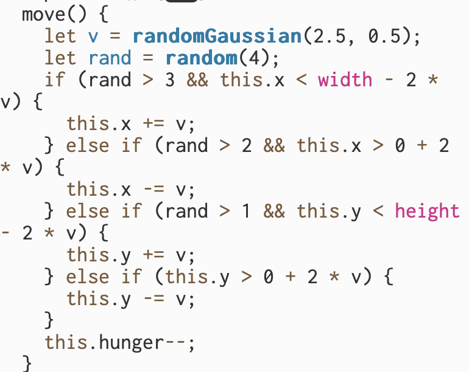
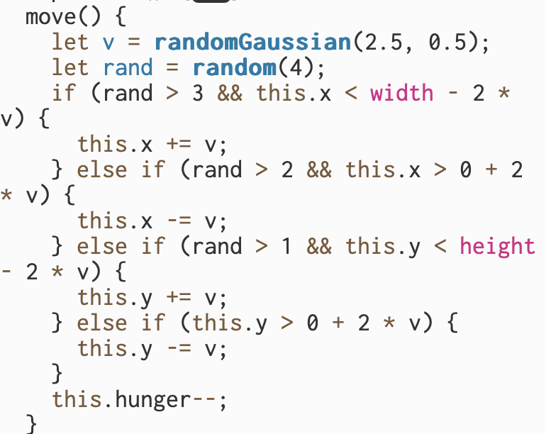

Documentation
2025.2.6 Update
In the newest version I incorporated vector values to control the movement of the predator and prey objects. I also used vectors for the coordinates of vegetation class objects. I found some of the methods that are contained in the vector to be really helpful, including add() and rotate().

In addition, I changed the mechanism when an object exists the screen by making it reappear on the other side.

Intention
The intention behind the project is to simulate a balanced ecosystem using random() and noise() in p5.js and exclusively random movement. The ecosystem consists of 3 levels: the vegetation level, the prey(herbivore) level and the predator(carnivore) level. Each level of the ecosystem interact with each other to maintain an equilibrium.
Process
Vegetation
I started with representing the vegetation level using objects from the vegetation class. Each vegetation object is a tile in a grid system with a given coordinate and a food variable. When a prey object is on top of tile x, it will consume the food variable of tile x until it becomes 0. The grow function will recover the food variable of a vegetation gradually until it reaches its maximum capacity of 10.

Prey

The second layer of the ecosystem are the preys. The objects of the prey class are visually represented as tiny multicolored particles. They feed on vegetations and provide food for the predators. They also reproduce babies whose colors are semi-determined by the color of their parents.
Both reproduce() and move() of the prey class use the random() function that we learned in class.
 

Predator

The third and highest level of the ecosystem are predators that feed on preys. The objects of the predator class are visually represented as small multicolored circles. Predators reproduce only when they have ample of food and at a slower pace compared to the preys. Predators consume preys that are in contact with it. The color of predators are determined by the colors of the prey they consume.

The move() function of the predator class uses noise() that I learned from the book and the videos to generate a relatively smoother and more natural movement.
Lastly, I made numerous small adjustments to particular values(such as the rate at which a vegetation object regains food, the speed at which the predators/preys move and reproduce, etc) so that each level of the ecosystem maintain an equilibrium with each other similar to what is observed in nature.
Challenges & Discoveries
I find the lesson on Perlin Noise to be really helpful when generating more organic movements. However, I faced some challenges when trying to use it to generate the movement of the predator objects as it is my first time using it. I first tried to directly control the x and y coordinates of the predator object using noise(), but it made the predators move in a very clear determined way with a lack of randomness. Thus, I used noise() to control the distance and direction each predator object moves to more indirectly control the x and y coordinates of the predator object using the noise() function.
Future Possibilities:
-
make the color of each predator/prey object a significant factor instead of being purely visual
-
Add obstacles in the terrain to limit the movement of predators/preys in certain areas
-
add more layers to the ecosystem
-
and more